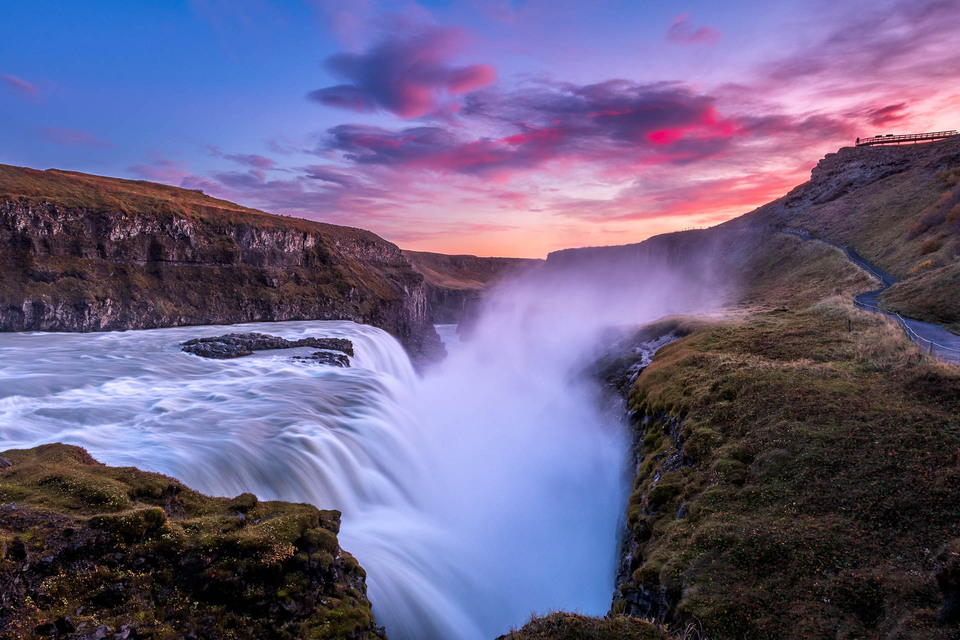

Gullfoss, or the "Golden Falls," is a magnificent waterfall located in the canyon of the Hvítá River in southwest Iceland. The water originates from the Langjökull glacier and plunges 32 meters down in two dramatic stages into a deep, rugged crevice. This natural wonder is a primary stop on the Golden Circle route, famous for the rainbows that often dance above the mist on sunny days and its thunderous, awe-inspiring roar.
Beyond its physical beauty, Gullfoss holds a significant place in Icelandic history as a symbol of environmental preservation. In the early 20th century, the waterfall was at risk of being harnessed for a hydroelectric power project, but local efforts successfully protected it for future generations. Today, visitors can enjoy various viewpoints along the canyon rim, witnessing the raw power of the glacial water as it carves through the ancient basalt landscape.

https://www.ntounas.gr/gullfoss-waterfall-in-iceland/